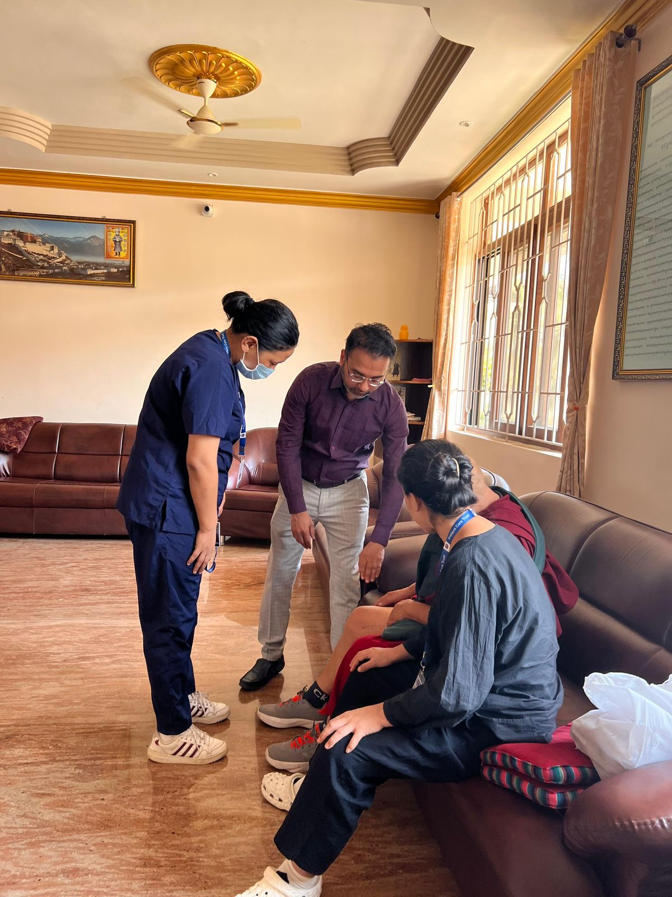

 <!-- Offcanvas Overlay & Sidebar -->
    <div class="offcanvas-overlay"></div>
    <div class="offcanvas-sidebar">
      <div class="offcanvas-header-bar">
        
        <button class="offcanvas-close"><ion-icon name="close-circle"></ion-icon></button>
      </div>

      <div class="offcanvas-gallery">
        
        
        
        
      </div>

      <div class="offcanvas-contact">
        <h3 class="offcanvas-title">Contact Info</h3>
        <div class="offcanvas-contact-item">
          <ion-icon class="header-icon" name="mail-outline"></ion-icon>
          <span><a href="mailto:svorthocare@gmail.com">svorthocare@gmail.com</a></span>
        </div>
        <div class="offcanvas-contact-item">
          <ion-icon class="header-icon" name="call-outline"></ion-icon>
          <span><a href="tel:+918204954498">+91 8204954498</a></span>
        </div>
        <div class="offcanvas-contact-item">
          <ion-icon class="header-icon" name="location-outline"></ion-icon>
          <span><a href="https://maps.google.com/?q=Indiranagar,+Bengaluru,+Karnataka+560008" rel="noopener noreferrer">Indiranagar, Bengaluru, Karnataka 560008</a></span>
        </div>
        <div class="offcanvas-contact-item">
          <ion-icon class="header-icon" name="time-outline"></ion-icon>
          <span>Mon-Sat 9:00 AM - 6:00 PM<br>Sunday 10:00 AM - 2:00 PM</span>
        </div>
      </div>

      <div class="offcanvas-socials">
        <a href="https://www.facebook.com/people/Sv-Orthocare/61578837785633/"><ion-icon name="logo-facebook"></ion-icon></a>
        <a href="https://www.instagram.com/svorthocare/"><ion-icon name="logo-instagram"></ion-icon></a>
        <a href="https://x.com/SVOrthocare"><ion-icon name="logo-twitter"></ion-icon></a>
      </div>
    </div>
    